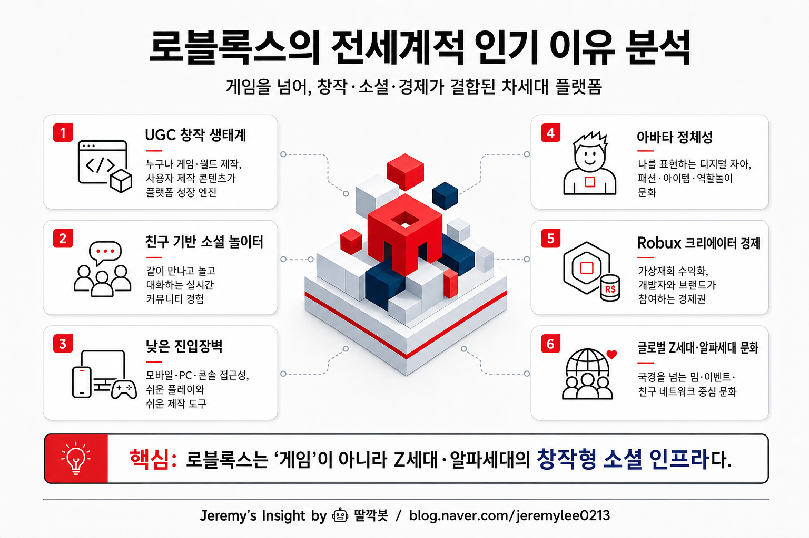

보고서모드 · 게임·플랫폼 산업 20년차 시니어 전문가 관점
로블록스 전세계적 인기 이유 분석 보고서

핵심 결론
로블록스는 단일 게임이 아니라 아이들이 놀고, 만들고, 소비하고, 친구를 만나는 참여형 플랫폼이다.
전세계적 인기는 그래픽 품질보다 UGC 창작 생태계, 소셜 네트워크 효과, 낮은 진입장벽에서 나온다.
향후 핵심은 유저 연령 확장, 안전한 커뮤니티 운영, 크리에이터 경제의 지속 가능성이다.
왜 전세계적으로 강한가
로블록스의 본질은 “게임 하나”가 아니라 수많은 사용자가 만든 경험이 계속 교체되는 소셜 플랫폼이다.
아이들은 로블록스 안에서 공포게임, 역할놀이, 육성, 패션, 전투, 미니게임을 오가며 친구와 시간을 보낸다. 그래서 경쟁력은 개별 게임의 완성도보다 친구가 있는 공간을 계속 제공하는 능력에 있다.
인기의 핵심 구조
| 성공 요인 | 의미 | 강력한 이유 |
|---|---|---|
| UGC 창작 생태계 | 유저와 개발자가 직접 경험을 만든다 | 콘텐츠 공급이 회사 내부 개발력에만 의존하지 않는다 |
| 소셜 놀이터 | 친구와 함께 접속하고 논다 | 게임보다 온라인 만남의 장소가 된다 |
| 낮은 진입장벽 | 무료 시작, 모바일·PC·콘솔 접근 | 국가·기기 차이를 넘어 빠르게 확산된다 |
| 아바타 정체성 | 옷, 아이템, 외형으로 나를 표현 | 어린 세대의 자기표현 욕구와 맞물린다 |
| Robux 경제 | 창작자와 유저 소비가 연결 | 플레이어가 창작자·판매자로 확장된다 |
20년차 게임·플랫폼 관점의 판단
로블록스는 그래픽 품질로 승부하는 게임이 아니다. 더 정확히는 어린 세대용 유튜브 + 마인크래프트 + 디스코드 + 앱스토어에 가깝다.
플랫폼은 직접 모든 콘텐츠를 만들지 않아도 된다. 창작자가 만들고, 친구가 퍼뜨리고, 유저가 소비하며, 다시 새로운 경험이 생긴다. 이 선순환이 로블록스의 방어력이다.
다만 아동·청소년 비중이 큰 만큼 안전, 채팅 관리, 과금 피로, 창작자 보상 문제가 흔들리면 플랫폼 신뢰가 빠르게 약해질 수 있다.
앞으로 볼 관찰 포인트
| 관찰 포인트 | 봐야 하는 이유 |
|---|---|
| 유저 연령 확장 | 어린이 플랫폼을 넘어 10대 후반·성인까지 확장 가능한지 확인 |
| 체류 시간 | 단순 가입보다 실제 놀이 시간이 유지되는지가 중요 |
| 크리에이터 수익성 | 창작자가 계속 남을 만큼 보상이 충분한지 확인 |
| 안전·규제 이슈 | 아동 보호와 결제 규제가 장기 리스크 |
| AI 제작 도구 | 제작 난이도가 낮아지면 콘텐츠 공급이 더 폭발할 수 있음 |
최종 판단: 로블록스의 진짜 힘은 게임성이 아니라, 전 세계 어린 세대가 모여 놀고 직접 만드는 “참여형 디지털 놀이터”라는 플랫폼 구조에 있다.
Jeremy's Insight by 🤖 딸깍봇
https://blog.naver.com/jeremylee0213
https://blog.naver.com/jeremylee0213